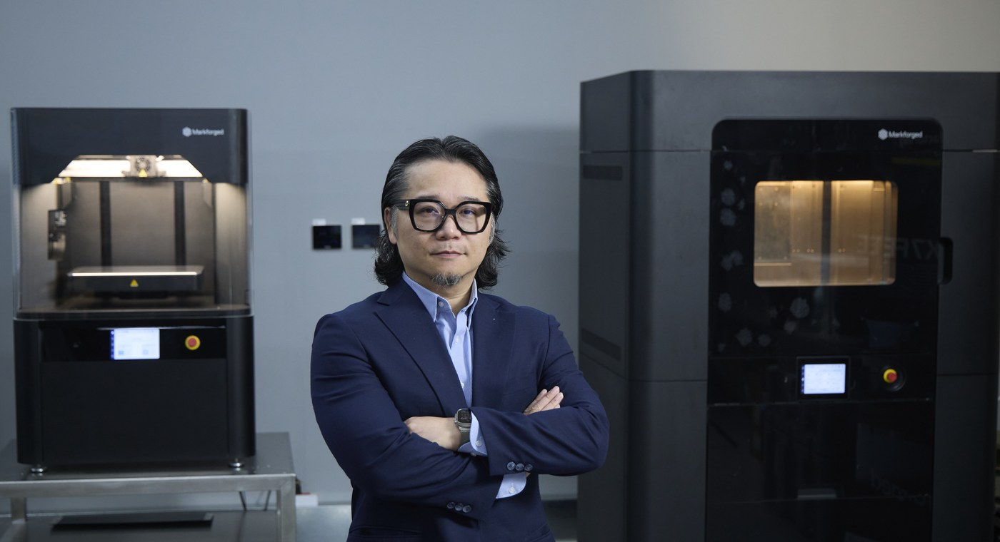
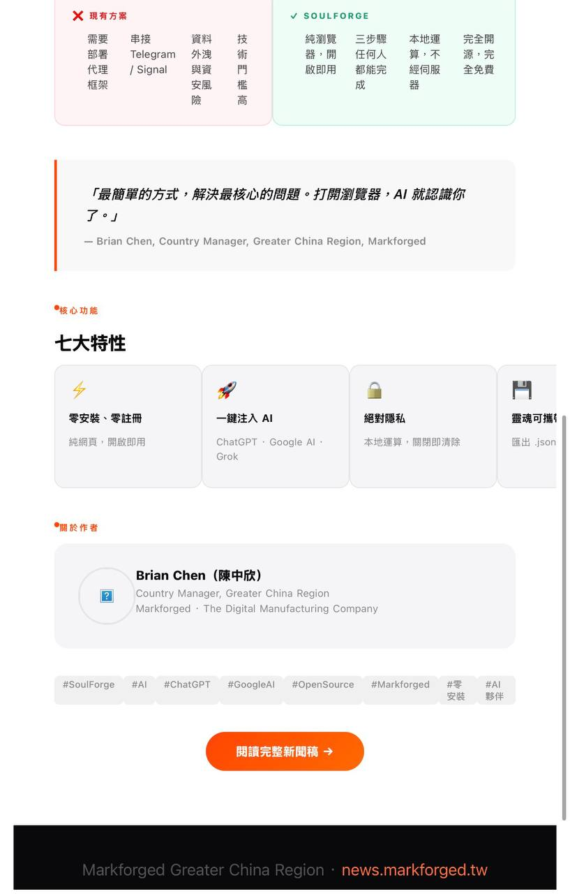
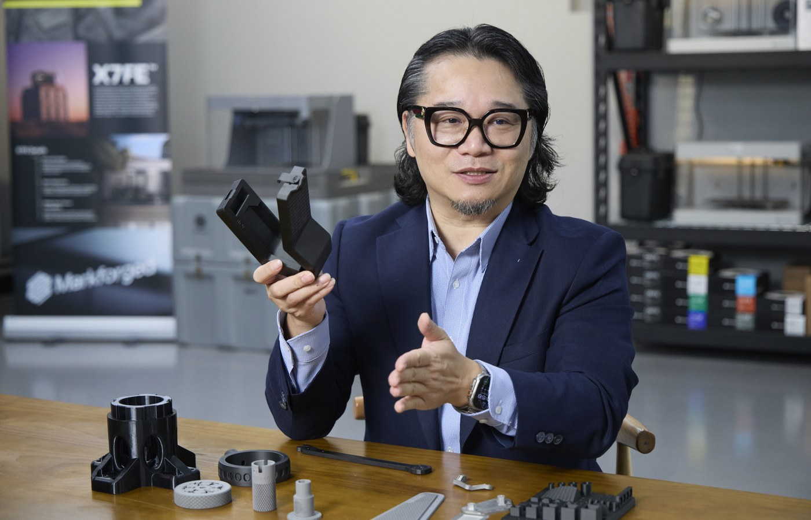

News & Insights

以制造与验证让 Physical AI 落地
Physical AI（实体 AI）的核心不在模型堆得多高，而在设计能不能落地、驱动机械运转。Markforged 大中华区总经理陈中欣认为，增材制造是设计走向量产的桥梁，关键在于输出的几何与迭代的节奏能不能对上：工艺不受刀具与模具限制，又具备结构强度，跟得上软件的迭代速度。
增材制造是设计走向量产的桥梁，关键在于输出的几何与迭代的节奏能不能对上。
文中陈中欣的观点 · Markforged 大中华区总经理
材料与验证
以连续纤维建立强度，以工程验证建立信任
“增材制造只能做原型”，是 2015 年材料受限时留下的旧标签。陈中欣说，Markforged 以连续纤维强化（Continuous Fiber Reinforcement, CFR）技术突破此限制：打印时将连续碳纤维、Kevlar 或玻璃纤维铺设在 Onyx（碳纤维微粒强化的尼龙基材）之中，由纤维承担载荷，兼具轻量与高刚性，在纤维铺层方向上，部分结构件的比强度（Specific Strength）可超越铝合金。旗舰机型 FX10 加装 Metal Kit 后，同一台设备即可在复合材料与金属之间切换，金属模式支持 17-4 PH、316L 与 H13 工具钢。
真正的导入门槛不在塑料强度，而在谁为零件的表现背书。解法是把信任转为可验证的规格：材料数据、工艺参数与检测报告随件留存，让设计、工艺与品控用同一套数据判断零件能不能上线；需要极严配合公差、或已摊销完开模成本的大量标准件，仍旧交给既有工艺，其余应用都以可追溯的数据决定。半导体、食品与航空航天等高规范场景，另有抗静电、食品接触级与阻燃材料，备件可直接装上产线，不必停留在原型阶段。
Canon 在半导体光刻机上以打印工装取代金属件，降低刮伤晶圆的风险——这是半导体设备 OEM 少数对外公开的导入案例。Haddington Dynamics 的七轴机械臂 Dexter，零件数由 800 件降至 70 件以下，机械臂可在一天内完成组装，速度提升 70%、成本降低 58%。导入面，Markforged 建立材料认证与培训机制，让设计、工艺与品控共用同一套语言，把个人经验转为组织能力。
产能配置
分流工装与工件精度，四阶段释放 CNC 产能
按需制造对加工厂的价值，不在取代 CNC，而在把不需要精密配合的软爪与防错板移出排程，让 CNC 工时回到高价值订单。关键是分清工件与工装的精度需求：以 ±0.02 mm（20 µm）为例，那是工件加工面的要求，工装本体不需要同等精度；衬套与嵌件的作用在于耐磨与锁固，而不是弥补公差。
四阶段蓝图：第一个月挑 3 至 5 件不需精密配合的应用做验证；第 2 至 3 个月导入嵌件工艺；第 4 至 6 个月走向近净成形，大型异形件先打印再精修；接着把重复性高的工装建成数字库存。陈中欣指出，这条路径约半年走完一轮，设备产能可以实质释放出来。
Hugard Inc. 的车床接料夹爪，制作时间由 CNC 加工的 144 小时缩短为打印 6 小时，成本从 400 美元降到 25.06 美元，每日接料 3,000 件、24 小时不间断运转——这类零件几何复杂又长期接触切削液，CNC 铣削与一般 ABS 打印都做不出来，增材制造补上的正是既有工艺做不到的那一段。Farason Corporation 的末端快换安装板，成本仅为 CNC 铣削的 25%，可支持每分钟 80 件、行程逾 26 英寸（约 660 毫米）的应用。Roman Design Solutions 以 5 台 X7 打印 Onyx 工装，单批 30–60 件。美国密歇根州的 Project DIAMOnD 则以数百台设备组成全美最大的分布式打印网络，急件可在网络内调度产能。
流程与库存
从边印边检走向全检，数字库存降低停机风险
Physical AI 的工具要能落地，必须满足四项条件：可重复、工艺记录可追溯、不必为它新增专家、应用范围界定清楚。这四项正是 Digital Forge 的设计前提；导入之后，差别不在设备本身，而在能不能嵌进日常流程。
把试错周期从两周压缩到隔夜，工程师就能从一次只做一版，变成一次测试三版，一年累积下来可以探索的方向远多于过去，这正是制造业进入迭代时代的优势。Markforged 以 Eiger 作为 Digital Forge 的引擎并持续更新，整合 Simulation、Inspection 与 Management and Integration 三个模块。Digital Forge Complete Advanced Plan 包含 Simulation 与 Inspection，适用机型扩及 Industrial 系列（台湾现售机型为 X7、X7 Field Edition、FX10、FX20）。云计算降低本地端的运算负担，离线部署则可满足国防等高信息安全场景的要求；Markforged 亦已取得 ISO/IEC 27001:2022 信息安全管理体系认证。
质量验证走的是闭环流程：打印过程中以激光扫描测量，完成后立即比对、判定并产出报告，记录操作者、时间与版本。一旦检测到异常，设备会自动暂停并留下记录，由人员判读后决定续印或终止，责任与轨迹都留在流程里。Hangar One Avionics 导入后，每件约省下 30 分钟检测时间，不增加工时就能做到全检。
根据全国工业总会（工总）白皮书调查，在 161 个公会中，缺工 76.6%、产业转型 75.7%，分列前两位。对应到制造现场，Eiger 内置的 AI 辅助功能可检索原厂技术文件，依用户的问题直接回答，现场不必等专家到场。陈中欣强调：“我们不是只有卖设备，是整个解决方案。最重要是软件。”
数字库存瞄准的是品种多、单项用量少、停机成本高的零件。Markforged 以 Digital Source 实现：OEM 上传设计并锁定工艺后，授权端只能依规范打印，无法下载设计文件或进行逆向工程。要把工厂能力纳入管理流程，需要管好三类数据：设计上云端并具版本权限、工艺参数锁定、验证报告随件保存。Vestas 已将逾 2,000 个零件纳入云端数字库存，并推广到 23 个站点；BMF GmbH 则以 Digital Source 让客户自行打印备件，把停机从平均 14 天压缩到 1 天。
本地落点
中台湾制造集群：把交付周期压缩到以天为单位
2025 年 12 月 Markforged 与彰化市签署 MOU，定位“无人载具＋数字锻造示范城市”，由台湾授权伙伴达运光电、实威国际与马路科技提供设备导入、CAD 整合及逆向工程支持，协助台中与彰化企业把交付周期压缩到以天为单位。陈中欣强调，台湾本来就有精密机械与信息通信集群的底子，若能把设计、制造与检测数据整合起来，供应链韧性与竞争力都会跟着提升。
Physical AI 能不能落地，关键在于谁能把试产与验证周期压缩到以天计算，并把设计定义、工艺参数与质量审核数据，转化为跨厂可复制的制造网络。若台湾能减少外包排队与备料积压，以按需制造与黑灯工厂实现自主生产，就有机会在全球智能制造重构中，从代工集群转型为具自主制造能力的高附加值环节。
Physical AI 听起来很远，但对台湾的工厂而言，起点不必是整厂数字化。陈中欣的建议只有一句：挑一件现在最占交付周期的工装，先印一次、量一次、上机试一次。当试错周期从两周压到隔夜，你会很快看清楚，真正卡住产能的到底是设备、是排程，还是那张还没被数字化的图。这一波制造业的重构，不会等谁准备好——它从你手上那一件零件开始。

想亲手摸到这些零件？
从 3 至 5 件不需精密配合的工装开始验证，是多数工厂风险最低的起点。Markforged 大中华区 VIP 体验日开放现场实机操作与样件上手，欢迎带着你手上最占用交付周期的那一件来，我们当场一起看。
报名 VIP 体验日 · 现场实机来源与说明
- 本文由 iThome 采访撰稿，Markforged 大中华区提供受访内容与案例数据（阅读 iThome 原文）。
- 文中案例与数据均取自 Markforged 官方公开案例，可于 markforged.com 查证。
- 专访拍摄：2026 年 9 月 8 日。